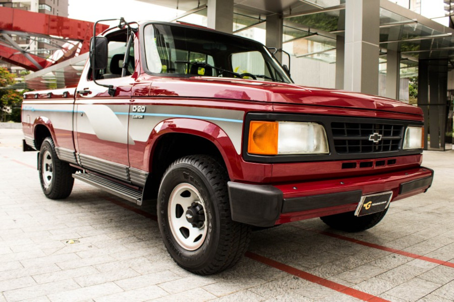

D20 - A história da lenda
D20 - 1985

A Série 20 surgiu em 1985, com um novo design que também compartilhou com as novas C10 e A10 (Serie 10), o mercado de utilitários era acirradamente disputado entre a Ford e a Chevrolet, e a Série 10 já demonstrava sinais de cansaço perante sua concorrente, a série de utilitários "F" da Ford.
Na linha de 1985, foram lançadas as pickups e posteriormente, em 1989, os utilitários esportivos. O grande destaque da nova série era o moderno desenho, típico dos veículos da década de 80, com identidade visual bastante semelhante ao resto da linha Chevrolet da época, com linhas retas e cantos arredondados, faróis quadrangulares iguais aos do Opala, grade frontal moldada em plástico, assim como a ponteira dos para-choques dianteiros. As dimensões da carroceria aumentaram em 100 mm na altura e na largura, em relação a Série 10 antiga. Comprimento, entre-eixos e as bitolas dianteiras e traseiras foram mantidas, pois o chassi era o mesmo da versão anterior. A nomenclatura das pickups era de acordo com o combustível utilizado: D-20 para as versões a diesel, A-20 para as versões a álcool (etanol) e C-20 para as versões a gasolina.
D20 Custom - 1993
Em 1993, ocorreu uma nova reformulação no visual, com o emprego de faróis no formato trapezoidal, uma nova grade dianteira e um novo painel frontal. Neste mesmo ano vieram inovações mecânicas como a direção hidráulica progressiva Servotronic (opcional), embreagem com acionamento hidráulico, melhorias na suspensão, novo tanque de combustível plástico com capacidade de 126 litros, novo posicionamento do filtro de ar priorizando a captação do ar externo, reforço no chassis similar ao do caminhão leve D-40, entre outras modificações.
D20 - 1995
Em 1995, a linha de montagem, que anteriormente ficava em São José dos Campos, passou para a fábrica de Cordoba, na Argentina, sob o regime CKD. Sem fôlego para enfrentar a concorrência dos modernos SUVs importados, os utilitários esportivos Chevrolet Bonanza e Chevrolet Veraneio foram descontinuados. No mesmo ano o fornecedor dos diferenciais mudou do tradicional Rockwell-Braseixos usado por décadas nos comerciais Chevrolet para o Dana, também utilizado na picape rival F-1000, dotado em todas as versões com sistema deslizamento limitado, chamado pela Chevrolet de "Positraction".
Nesta ocasião a versão a Álcool A-20 também foi descontinuada, por conta da baixa demanda por veículos com esse combustível. A versão a gasolina, entretanto, ganhou o renovado motor 4.1 com injeção multi-ponto, derivado do Omega, ajustado para render 138 cv e um generoso torque em baixa rotação.
Em 1996, as pickups são descontinuadas, para ceder o lugar à Silverado, de desenho mais moderno e acabamento mais luxuoso, que embora mecanicamente similar e com bons índices de vendas, nunca viria a repetir o sucesso de suas antecessoras.
Extras
Nesta seção, você pode acessar mais projetos pessoais feitos por mim.